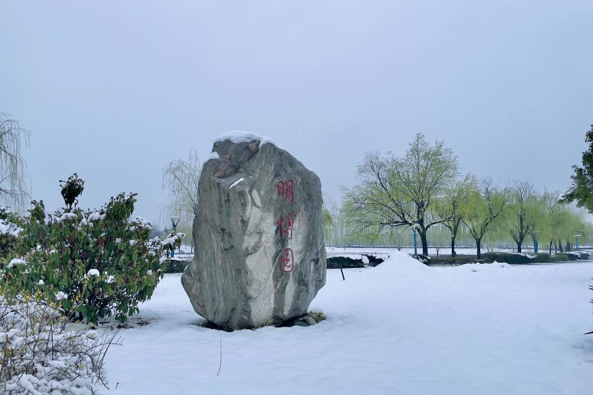

|

学校简介

华北水利水电大学(North China University of Water Resources and Electric Power)建有花园校区(河南省郑州市北环路36号，占地面积555亩)、龙子湖校区(河南省郑州市金水东路136号，占地面积1780亩)，江淮校区（河南省信阳市罗山县龙池大道236号，占地面积1500亩）正在建设，是水利部与河南省共建、以河南省管理为主的高校，是河南省特色骨干大学，是全国首批硕士学位授予权单位、首批中西部高校基础能力建设工程高校、首批具有海外留学生招生资格高校、教育部卓越工程师教育培养计划高校，是教育部确定的“金砖国家网络大学”中方高校牵头单位。学校起源自1951年创建于北京的中央人民政府水利部水利学校，1954年更名为水利部北京水利学校。1958年北京水力发电学校、北京水力发电函授学院并入，成立北京水利水电学院。1969年迁至河北省磁县岳城水库办学，1971年更名为河北水利水电学院。1977年迁至河北省邯郸市办学，1978年更名为华北水利水电学院。1990年迁至河南省郑州市办学，2000年由水利部主管划转河南省管理，实行省部共建。2009年水利部与河南省政府签署共建华北水利水电学院战略协议。2013年更名为华北水利水电大学。2021年入选河南省“双一流”学科创建高校。